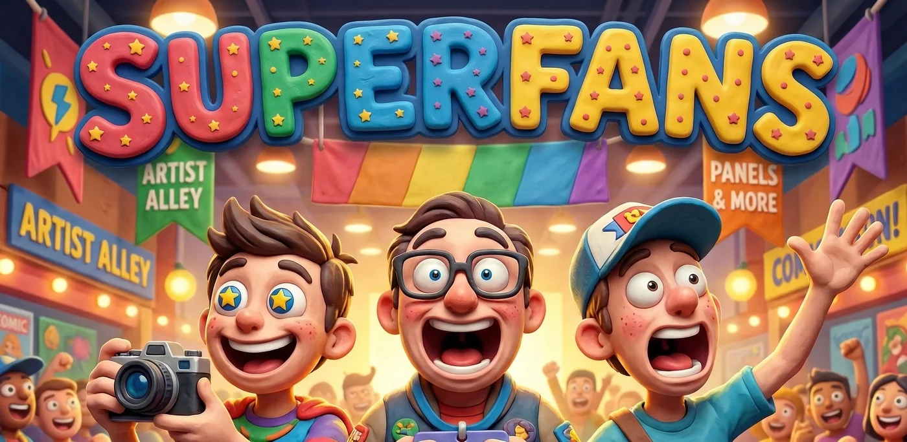
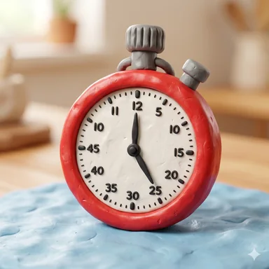
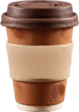
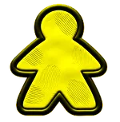
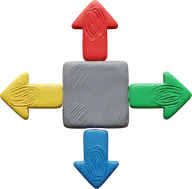
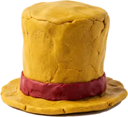
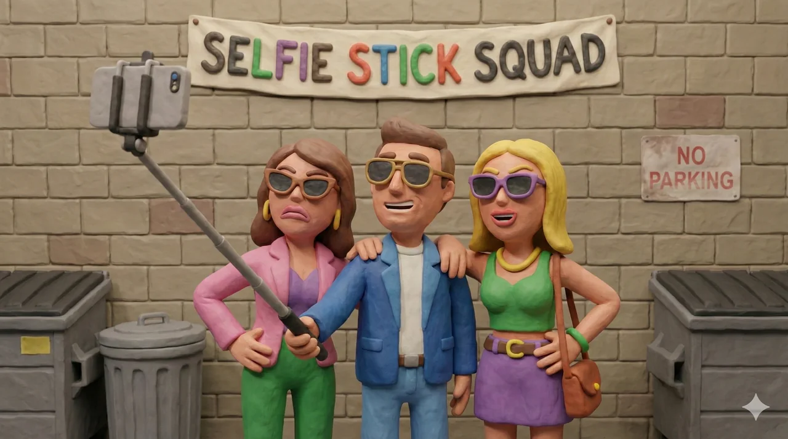
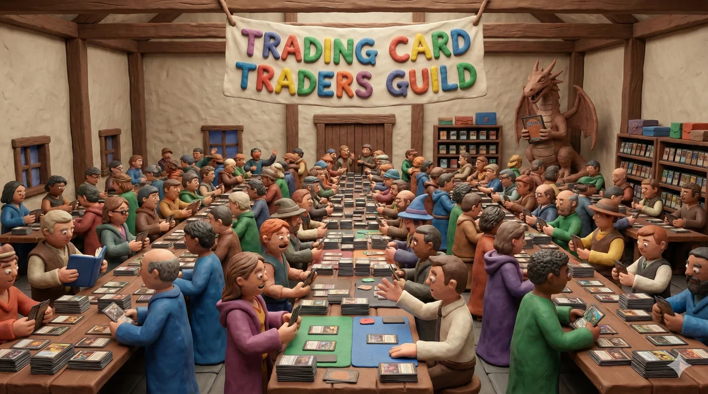
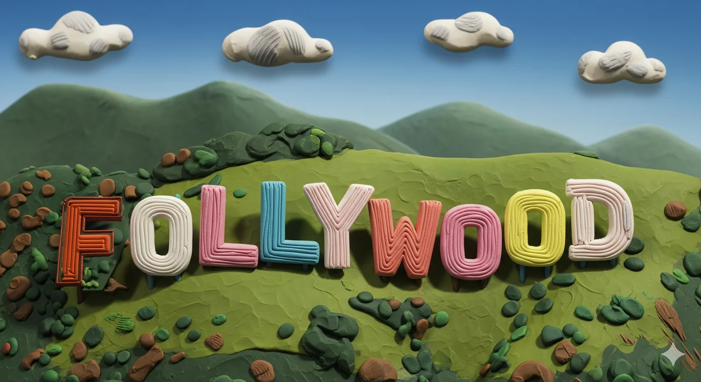

Move your Crew between nine halls, jostle for Prime Position and be there when the stars walk in. Five Hours. One winning fan club.

Play time45-75 min Ages12+
BotsEasy, Medium, Hard
Listed from the engine's VARIANTS table once the rulings are in: label, choices, default, one-line description each.
Everyone tops up coffee, the fuel for every action.
Take turns: move Crew, upgrade badges, volunteer, take selfies, buy swag. Pass early for rewards.
The star of the Hour walks the floor, hands out selfies and scores the queue where they stop.

Move 1 Crew x3Three Crew, 1 hall each3
UpgradeN00b to VIP to AAA5

